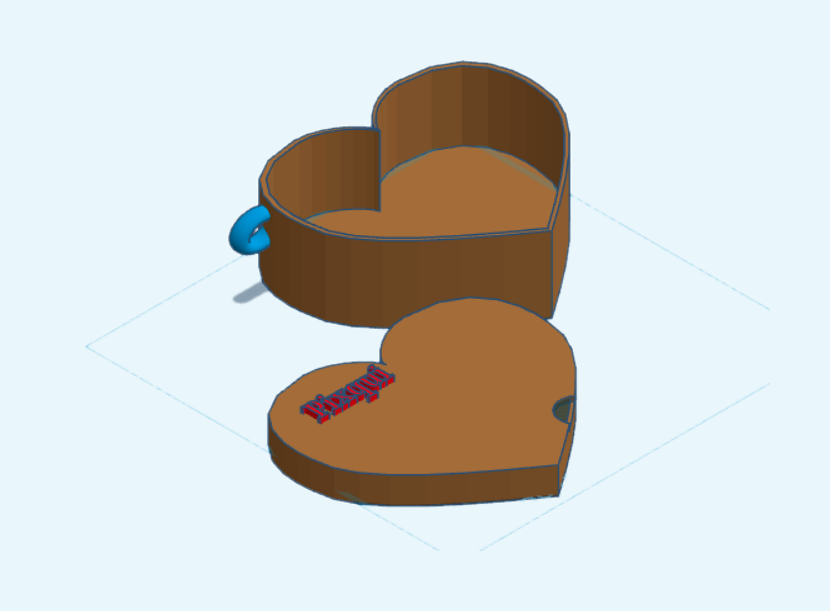

Es el dispositivo que lleva el cuidador (mamá, papá, o encargado del niño). También está basado en un módulo ESP32 y se encarga de recibir constantemente la señal que envía el dispositivo del niño.
Cuando la distancia entre ambos dispositivos supera el rango de seguridad establecido, este dispositivo genera una alerta inmediata, avisando al cuidador que el niño se ha alejado demasiado.
Avisa en el momento en que se supera el rango de distancia.
Está siempre escuchando la señal del dispositivo del niño.
Pensado para que el cuidador lo entienda sin complicaciones.
Se puede llevar en el bolso o como llavero.